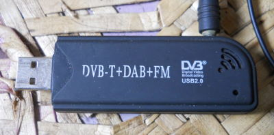

RTLsdr USB AIS
For AIS vhf and more on tv tuner usb dongle
Use a low cost USB DVB-T (Digital TV) receiver for AIS messages from Ships. Various dongles are supported, the r820-t works the best and is also the cheapest (typically $8 US)

Links
-
Maintenance Source: https://github.com/rgleason/rtlsdr_pi
-
Download: Website Download
-
Forum: Rtlsdr Plugin
-
French Blog rtlsdr and Opencpn
1. Installation
-
Install and Enable the plugin: Instructions
RtlsdR_pi is available as a managed plugin. The OpenCPN Manual has general information in Plugin Download, Install and Enable for installing this plugin. This is the preferred way.
In OpenCPN, go to the Options → Plugins and download, install and enable the LogbookKonni plugin (no settings are required).
-
First "Update" the master plugins catalog.
-
Select the rtlsdr_pi entry and "Install" the plugin.
-
In the list of installed plugins "Enable" the sQuiddio plugin.
-
After successful installation, the plugin should be available in the plugins tab of your OpenCPN options dialog box.
B. Hardware Setup:
You must use a proper vhf antenna, not the one included with the dongle. I cut the antenna coax included with the dongle, and spliced it to the vhf coax. You must solder both inner and outer (shield) connections.
C. Software Setup:
Linux
You must now compile rtl-sdr from source:
git clone git://git.osmocom.org/rtl-sdr.git
mkdir build
cd build
cmake ..
sudo make installNext, you must have either aisdecoder or gnuradio (with gr-ais).
For aisdecoder:
wget
http://www.aishub.net/downloads/
aisdecoder
.
tar
.
gz tar zxvf aisdecoder.tar.gz
cd aisdecoder
mkdir build
cd build
cmake ..
sudo make installFor gnuradio with gr-ais: <not completed>
Windows
You must run the program zadig to install the driver available here https://zadig.akeo.ie/ The default settings should be fine.
The receiver program (rtl_fm) and decoder (aisdecoder) are included as pre-built binaries, so from here, install the plugin setup package. So far I have no pre-built packages for gnuradio on windows, but this would be useful if provided. If there are issues it may be helpful to install the sdrsharp program to determine if the dongle is receiving data at all.
2. Preferences - All Platforms
It should be possible (from the preferences dialog) to calibrate the dongle with the Auto Calibrate button:

From what I can tell so far, the error correction range is +- 128 (my two dongles use values of 35 and 50) and must be within 5 for aisdecoder and 15-20 for gnuradio. When the value is more accurate, more ais messages are received as well.
From here, install the plugin package, or build from source and install. This works best in an area with a lot of ais traffic. Once calibrated, ships should appear on the chart.